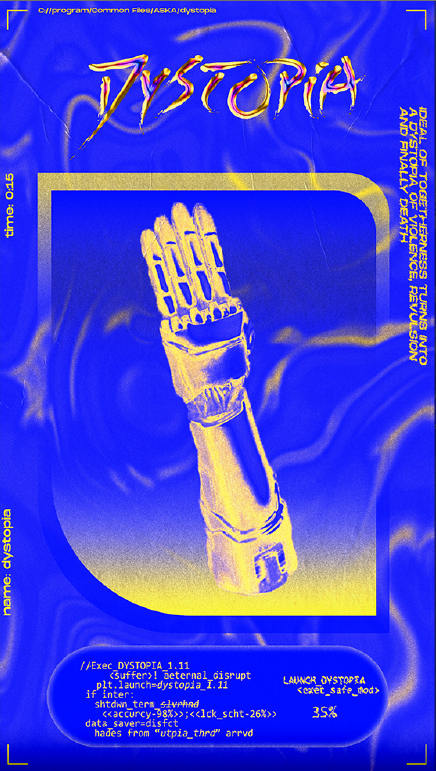
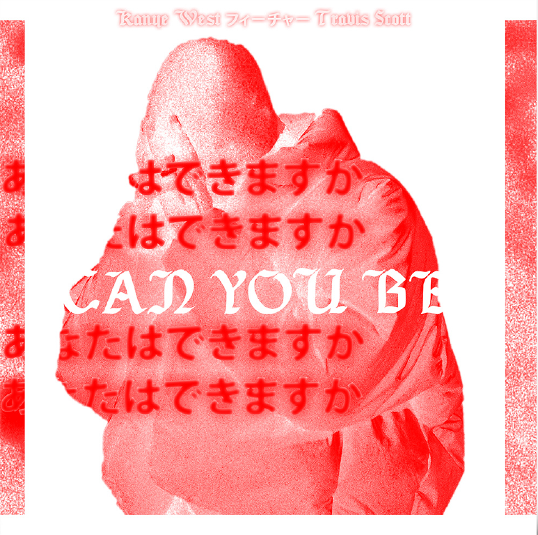
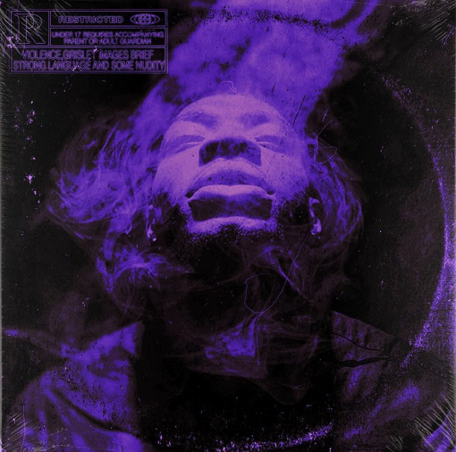
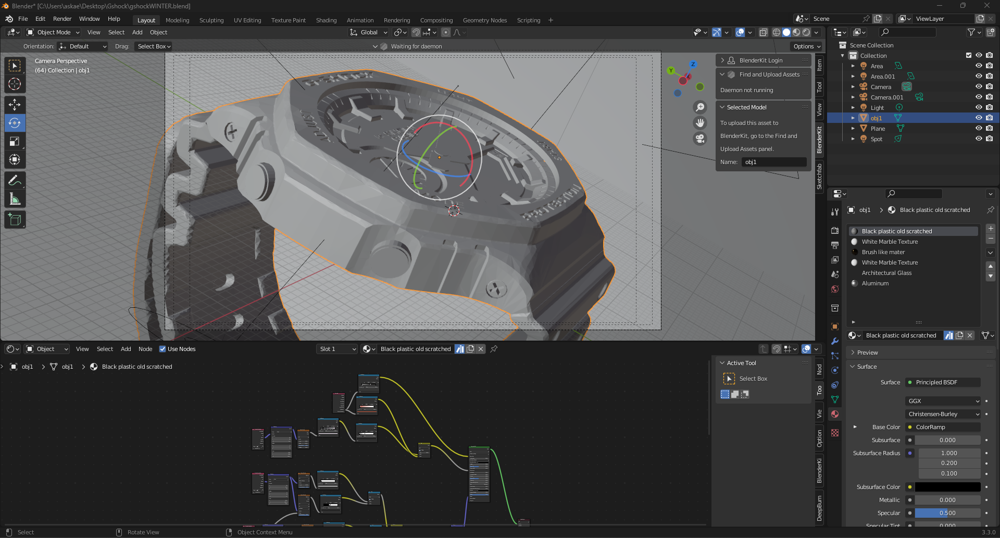
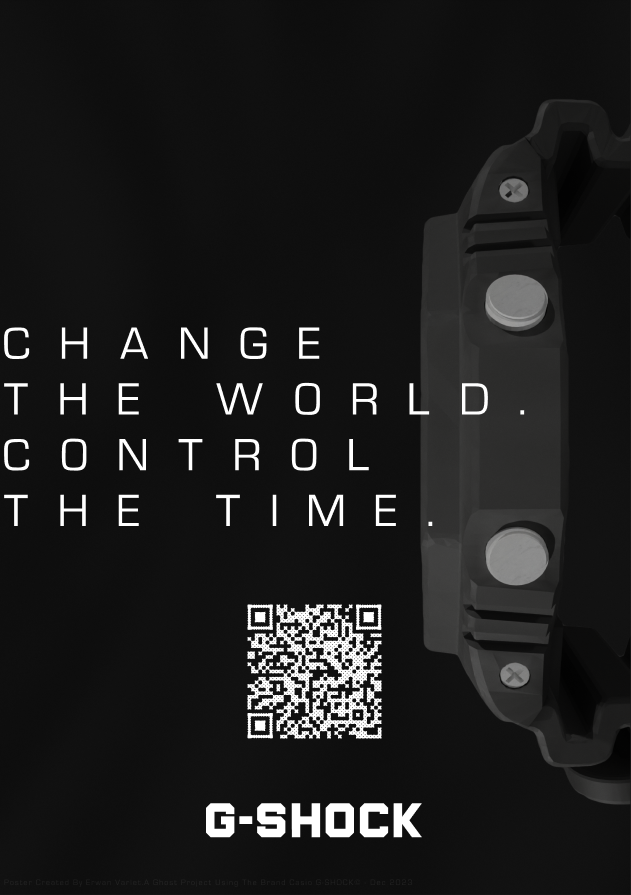

CYBERPUNK STYLE "DYSTOPIA" POSTER
2021 - Design with Photoshop and Illustrator
This is a poster created by myself using Adobe Photoshop and Illustrator. I wanted to practice playing with electric colors related to the game Cyberpunk 2077 and the cyberpunk universe. The presence of code, this mechanical arm at the center of the poster, and the name "Dystopia," referring to the dystopian universe of this world.

RE-DESIGN FOR REVOL
2022 - UX / UI with Figma
The homepage you see here is a redesign I worked on while searching for an internship in 2022. I wanted to modernize the website for the Revol tableware brand. So, I took inspiration from flat design to redesign this homepage, aiming for a layout that is less web-centric but more intuitive.
*1 is the re-design, 2 is the original.
ART FOR ALBUM COVERS
2020 - 2023 Graphic design with Photoshop
During my entire process of learning Photoshop, I used to create art covers for musical artists. Some were unofficial like the one for Kanye West, in a way to improve my skills, but I already worked with french singer for creating album covers.


ADVERTIVISING CAMPAIGN FOR CASIO G-SHOCK
2024 - Created with Blender and Figma
I made a G-SHOCK watch model in Blender by modifying an old model file, adding more details and textures. From this 3D model , I produced initial prints to get a general idea of what we wanted for the campaign.
We did in groups of 4 this campaign with empathy map, the concept of this advertising campaign and all the process of our ideas.